概要
『ジョジョの奇妙な冒険』は、荒木飛呂彦による日本の漫画作品で、1987年に連載が開始されました。この作品は、複数の世代にわたるジョースター家の冒険を描いており、独特のスタンド能力や独創的なキャラクターデザインで知られています。
～PARTS～
～ABOUT～
代々血統が受け継がれ、主人公が交代していく物語
「『ジョジョ』って第何部だとか、主人公が何人もいたりだとか、複雑そう。コミックスも100冊くらい出てるし、タイトルが違うのもあるし、どこから読んでいいかわからない」という方は多いかもしれません。
1987年に週刊少年ジャンプで連載を開始した『ジョジョの奇妙な冒険』は、第１部の主人公ジョナサン・ジョースターと、敵対するディオ・ブランドーとの因縁から始まる物語。その戦いはジョナサンの代だけでは決着せず、その子孫たちも巻き込んで100年以上続きます。主人公や舞台が交代していくのはそういう理由なのです。
人間の誇りと勇気を描き上げる「人間讃歌」
第１部では謎の石仮面の力で不老不死の力を得たディオ、第２部では石仮面を創った“柱の一族”、第3部では100年の眠りから目覚めた一族因縁の仇敵が歴代主人公の前に立ちはだかります。この敵役たちが、とにかく強く、非常に魅力的。
誇り高き初代主人公ジョナサン・ジョースター、頭脳戦が得意な２代目主人公ジョセフ・ジョースター、不言実行の３代目主人公・空条承太郎は、各部のラスボスに立ち向かっていきます。「ジョ」ナサン・「ジョ」ースターと、頭の音をとると“ジョジョ”になるから、『ジョジョの奇妙な冒険』なのです。
作品のテーマは「人間讃歌」。『ジョジョ』に登場するキャラクターは善も悪も己の信念を貫きます。善悪を問わず、恐怖を克服する精神、困難に立ち向かう勇気が描かれます。これも作品の大きな特徴と言えます。
～CHARACTERS～
第１部登場人物
-
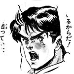
ジョナサン・ジョースター
イギリス貴族の跡取り息子で、幼い頃に母親を事故で亡くしている。父親譲りの誇り高い精神、困難に立ち向かう勇気を持つ。
-
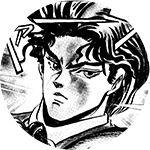
ディオ・ブランドー
ジョースター家に養子として引き取られた少年。明晰な頭脳と冷徹な野心の持ち主で、ジョースター家の財産乗っ取りを画策している。
-
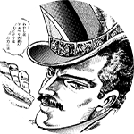
ウィル・A・ツェペリ
石仮面を発見した発掘隊の一員。石仮面の闇の力に対抗するため、厳しい修業の末、波紋法を体得。ジョナサンを指導する。
-
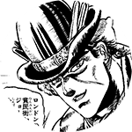
ロバート・E・O・スピードワゴン
食屍鬼街の住人で、チンピラ達をまとめる兄貴分。ジョナサンの人間性に感銘を受け、ともに石仮面の力と戦うことになる。
第2部登場人物
-
ジョセフ・ジョースター
祖父ジョナサンと違って、お調子者で明るい性格。嫌いな言葉は「努力」と「ガンバル」。抜け目のない駆け引き巧者で、頭脳戦を得意とする。生まれながらに波紋の資質を持つ。
-
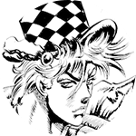
シーザー・Ａ・ツェペリ
柱の一族との因縁の対決に備え、腕を磨いていた波紋戦士。ジョナサンの師ウィル・Ａ・ツェペリの孫。キザな性格だが、一族の誇りを何よりも重んじる気高き精神の持ち主。
-
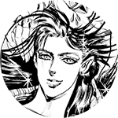
リサリサ
イタリアのヴェネチアに住む、素性一切が謎の女性戦士。シーザーの波紋の師であり、後にジョセフもリサリサの元でより強力な波紋を習得するべく特訓することになる。
-
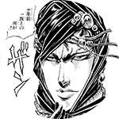
カーズ
柱の一族を統率する天才で、石仮面の創造主。唯一の弱点である太陽を克服するため「エイジャの赤石」を探している。光の流法（モード）を操る。
-
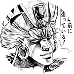
エシディシ
炎の流法（モード）を操るカーズの仲間。トリッキーな性格の持ち主で、不気味な存在感を放っている。
-
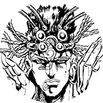
ワムウ
風の流法（モード）を操るカーズの部下。戦士としての誇りを重んじる、ストイックな性格の持ち主。
-
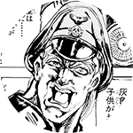
ルドル・フォン・シュトロハイム
ドイツ軍の将校。柱の男の未知の能力を軍事利用するべく、調査・発掘・研究を行っている。
-
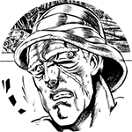
ロバート・Ｅ・Ｏ・スピードワゴン
第1部の激闘の後、アメリカに渡り、石油事業で大成功をおさめる。ジョナサンの妻・エリナ、その孫ジョセフを陰から支えている。
第３部登場人物
-
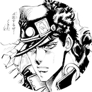
くうじょうじょうたろう
空条承太郎スタンドは「星の白金（スタープラチナ）」。ジョセフの孫。寡黙だが、やる時はやる性格。
-
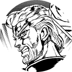
ジョセフ・ジョースター
スタンドは「隠者の紫（ハーミットパープル）」。戦いの経験値は随一。
-
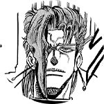
かきょういんのりあき
花京院典明スタンドは「法王の緑（ハイエロファントグリーン）」。冷静沈着な性格。
-
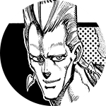
ジャン・ピエール・ポルナレフ
スタンドは「銀の戦車（シルバーチャリオッツ）」。一行のムードメーカー。
-
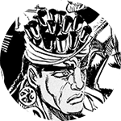
モハメド・アブドゥル
スタンドは「魔術師の赤（マジシャンズレッド）」。一行の軍師的な存在。
-
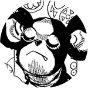
イギー
スタンドは「愚者（ザ・フール）」。一筋縄ではいかない性格の犬だが、実力は相当。
-
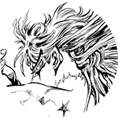
DIO
ジョセフの祖父ジョナサンの体を奪い、100年の眠りから復活。スタンド能力も身につけ、ジョースター一族の根絶を目論む。
第４部登場人物
-
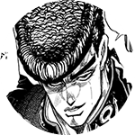
ひがしかたじょうすけ
東方仗助ジョセフ・ジョースターの隠し子。気立てのいい不良だが、キレた性格を併せ持つ。
-
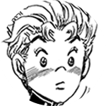
ひろせこういち
広瀬康一杜王町に住む正義感の強い少年。仗助と仲が良いため、様々な事件に巻き込まれていくハメになる。
-
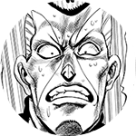
にじむらおくやす
虹村億泰仗助、康一の同級生。仗助と敵対するも命を救われ、親友に。
-
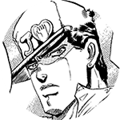
くうじょうじょうたろう
空条承太郎ジョセフの意思により、仗助に迫る危機を伝えるため杜王町を訪れる。
-
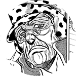
ジョセフ・ジョースター
東方朋子との大恋愛の末に生まれた仗助を助けるべく、杜王町に来訪。
-
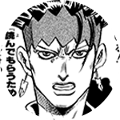
きしべろはん
岸辺露伴杜王町在住の天才漫画家。スタンド能力で人の記憶を読む事が可能。
-
やまぎしゆかこ
山岸由花子康一に一方的に想いを寄せる。怒らせると非常に怖いが、純な一面も。
-
きらよしかげ
吉良吉影杜王町に住む殺人鬼。女性の手を偏愛し、殺人を犯さずにいられない性の持ち主。目立たぬよう努力し、静かに暮らしている。
第５部登場人物
-
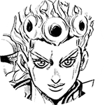
ジョルノ・ジョバァーナ
父親はDIOだが、DIOの肉体はジョナサンのものであるため、ジョースターの血統も受け継ぐ。スタンドは「ゴールド・エクスペリエンス」。
-
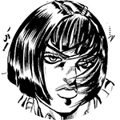
ブローノ・ブチャラティ
スタンドは「スティッキィ・フィンガーズ」。揺るぎない信念、行動力を持ち、絶大な信頼を集めるチームのリーダー。
-
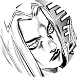
レオーネ・アバッキオ
スタンドは「ムーディー・ブルース」。ブチャラティの部下。正義感溢れる警察官だったが、社会の矛盾に失望し、ついにはギャングになった。
-
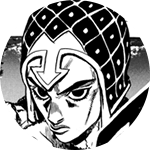
グイード・ミスタ
スタンドは「セックス・ピストルズ」。ブチャラティの部下で、“単純に生きる”がモットーのチームのムードメーカー。射撃の才能は天才的。
-
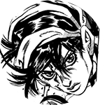
ナランチャ・ギルガ
スタンドは「エアロスミス」。ブチャラティの部下。人生に絶望していた時、自分を叱ってくれたブチャラティに恩を感じ、組織に入団。
-
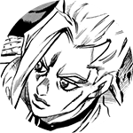
パンナコッタ・フーゴ
スタンドは「パープル・ヘイズ」。ブチャラティの部下で、IQ152を誇るチームのブレーン役。暴行事件がきっかけで組織に入団した。
-
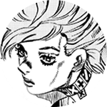
トリッシュ・ウナ
組織のボスの娘。ボスの命令により、ブチャラティチームが彼女を目的地まで送り届ける護衛を任される。高飛車な15歳だが芯は強い。
第６部登場人物
-
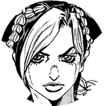
くうじょうじょりーん
空条徐倫承太郎とアメリカ人女性の間に生まれる。父親譲りのタフさと冷静な判断力を持つ。スタンドは「ストーン・フリー」。
-
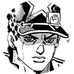
くうじょうじょうたろう
空条承太郎徐倫の父親。徐倫が陰謀により投獄された事を知り、娘を助けるため刑務所へ向かう。40代になるがタフさは健在。
-
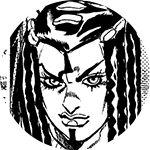
エルメェス・コステロ
スタンドは「キッス」。留置所で徐倫と友人になる。ある復讐を目的に刑務所へ入ってきた。
-
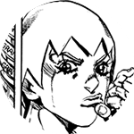
F・F
刑務所内湿地帯のプランクトンに「能力」と「記憶」のDISCを与えたことで生まれたミュータント。
-
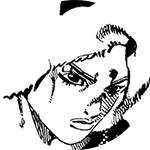
ウェザー・リポート
スタンドは「ウェザー・リポート」。プッチ神父の手で記憶の大半を奪われている謎の男性囚人。寡黙な性格。
-
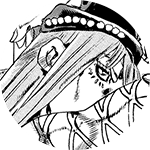
ナルシソ・アナスイ
スタンドは「ダイバー・ダウン」。極度の分解癖の持ち主。冷酷な性格だが、徐倫に想いを寄せている。
-
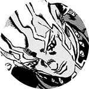
エンリコ・プッチ
G.D.st.刑務所の教誨師。DIOの親友で、彼の遺した「天国へ行く方法」を実現するために暗躍する。
第７部登場人物
-
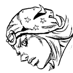
ジョニィ・ジョースター
天才騎手だったが、慢心から半身不随に。失意の中で生きていたが、ジャイロの鉄球の「回転」に希望を見出し、レースに参加する。
-
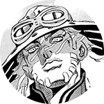
ジャイロ・ツェペリ
ネアポリス王国の法務官で、死刑を司る一族に生まれる。不当な罪で投獄された少年を救うため、国王の恩赦を得るべくレースに参加する。
-
スティーブン・スティール
40年のキャリアを持つ歴戦のプロモーター。不幸なトラブルからドン底にあったが、起死回生の企画としてSBRレースを主催。
-
ルーシー・スティール
スティーブン・スティールの妻。夫とはかなり歳がはなれているが、精神的に支えているのはルーシーの方。
-
ファニー・ヴァレンタイン
第23代アメリカ合衆国大統領。SBRレースの後見人だが、その真の目的は全米に散らばった「聖なる遺体」を探すことにある。
第８部登場人物
-
ひがしかたじょうすけ
謎の青年・東方定助災害によって出現した謎の隆起物「壁の目」のそばで発見された謎の青年。記憶を失っているが、謎の能力を持っている。
-
ひろせやすほ
広瀬康穂杜王町に住む女子大生。「壁の目」のそばで定助を発見し、救出。成り行きで彼の記憶探しに付き合う事に。
-
ひがしかたじょうしゅう
東方常秀東方家の次男。康穂に想いを寄せている。そのため、康穂が定助の世話をするのが気にいらず、何かにつけて文句をつける。
-
きらよしかげ
吉良吉影定助の記憶を探る過程で登場する人物。どうやら定助と何らかのかかわりがあるらしい。
第９部登場人物
-
ジョディオ・ジョースター
オアフ島に暮らす少年。大富豪になることを夢見ており、そのヒントは目には見えない"仕組み"にあると考える。スタンド能力は重力のある雨を降らせる「11月の雨（ノーヴェンバー・レイン）」。
-
ドラゴナ・ジョースター
ジョディオの兄。女の子のファッションが大好きで、ブティックで働いている。スタンド能力は「スムース・オペレイターズ」。
-
パコ・ラブランテス
鍛え上げられた肉体を持つ少年。盗みが大好きでゲーム感覚で他人の物を掏る。スタンド能力は、筋肉を自由自在に操る「THE ハッスル」。
-
ウサギ・アロハオエ
突如チームに加入した全身タイツの少年。
スタンド能力は、周囲にあるもので誰かが望むものに変身する「THE MATTEKUDASAI」。 -
メリル・メイ・チー
ジョディオが通う学校の校長先生で、副業にブティックを営むスーパーウーマン。その裏の顔は、ジョディオ達を指揮するチームの"ボス"。